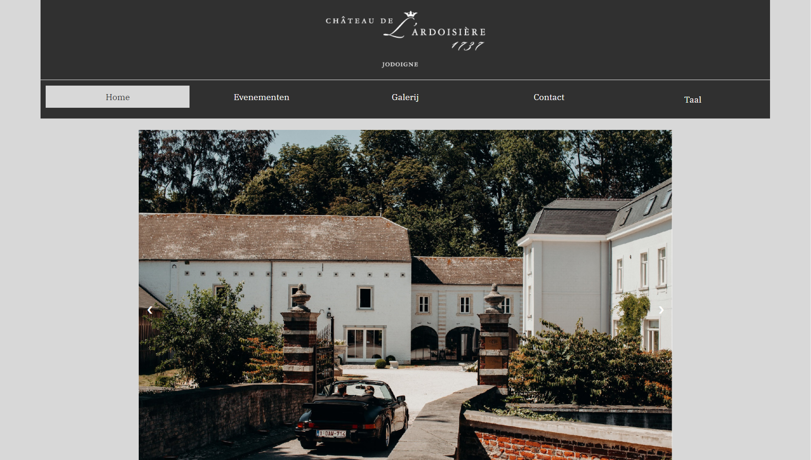
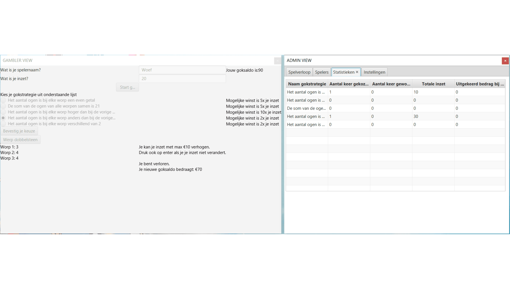

Projecten
Chateau de l'Ardoisière
Voor het vak Webontwikkeling 1 heb ik voor een klant een statische website gemaakt.
Zoals u ziet heb ik mijn e-portfolio hierop gebaseerd. Dit omdat ik best trots was op de
lay-out van de website. Voor dit project heb ik enkel gebruik gemaakt van HTML en CSS.
Bezoek hier de website

Corona registratie
Voor het vak Webontwikkeling 3 kregen we de opdracht om een website te maken voor een
bepaalde organisatie waarop informatie bijgehouden kon worden in verband met COVID-19. Enkele dingen
die geïmplementeerd zijn, zijn: een login/logout, het registreren van nieuwe leden, alsook het verwijderen
van leden, het registreren en verwijderen van contactmomenten van leden, een positieve corona test aangeven,
kijken met wie je in contact ben geweest sinds je positieve test en met wie je in een bepaalde les op een gegeven
dag en tijdstip was. We maakte gebruik van HTML, CSS en Java.

Gokspel app
Voor het vak OOO (Object Oriented Ontwerp) heb ik samen met een mede-studente een kleine applicatie
ontwikkeld, een gokspel. Hierbij kan je verschillende strategieën kiezen om op te gokken en daarna een dobbelsteen
werpen. Je hebt na 2 worpen de kans om je inzet te verhogen. Voor de admin zijn er verschillende tabs, namelijk:
spelverloop, spelers, statistieken en instellingen. Bij instellingen kan de admin aanduiden welke strategieën
gebruikt worden en wat de winstfactor per strategie is. Voor deze applicate werkte we met Java en JavaFX.
